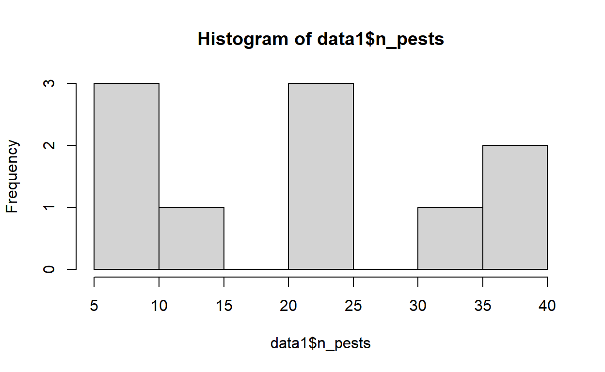

Overview
Welcome to this first workbook in the R for Data Management Module.
During these workbooks you will not need to be writing any of your own R code but will see examples of code that should help you in your own projects.
This first workbook will look at some code you can use to check and clean your data in R.
This covers
- Creating new variables
- Dealing with missing data
- Checking values
- Recoding and changing values
- Sorting data
- Subsetting data
Installing R and RStudio
Both R and RStudio are open source software tools, so these can be downloaded from the internet for free, forever.
Even if you have prior installations of R or RStudio on your computer - please ensure you download and install the most recent versions of both programs. R and RStudio are both updated on a very regular basis, and some of the features we may highlight in this course may not be available if you are using an older version.
Video covering the installation process
The first thing to install is the most recent version of R for your operating system: Download R for Windows
Once you have completed the installation of R you can download RStudio, the link below should provide the recommended link to download based on your operating system. Download RStudio
You should not need to change any of the default settings as you work through the installation process. If you are having any issues with the downloading and installation process please make sure that you have administrator rights on the computer you are working on. Please remember that you can use the help forum at any time if you are struggling with these steps.
Tidyverse
A big advantage of R is that it is open source.Therefore the packages which people have designed to accomplish certain tasks are freely available for anyone to download and learn how to use.
In recent years, there is a curated collection of packages which has become immensely popular.The tidyverse. This is a range of packages quite closely linked to this established concept of “Tidy data” as developed by Hadley Wickham. In fact he literally wrote the book on the subject
The tidyverese contains a wide array of packages with different purposes, but the general philosophy is keeping your data and your code clean, readable and easy to understand.
For our purposes during this module of the course, our main 2 packages will be Dplyr and Tidyr. If you took Stats4SD’s course ‘Introduction to R’, you may be somewhat familiar with these packages already.

Dplyr is primarily concerned with data manipulation, from this package we will be looking into how to create new variables but also edit existing ones.In a later session we will also look at merging data. For more information on this package visit this page

Tidyr on the other hand is about some of the primary rules about Tidy data as the name implies. This includes functions to reshape your data and deal with some missing values. These will be our primary focus from this package but it does have other capabilities as well. Visit this page for more information
The easiest way to install these packages to your version of R would be to run the following code.
install.packages("tidyverse")## Installing tidyverse [1.3.1] ...
## OK [linked cache]#Remember that you need to load packages to use them
library(tidyverse)## Warning: package 'tidyverse' was built under R version 4.0.5## -- Attaching packages --------------------------------------- tidyverse 1.3.1 --## v ggplot2 3.3.5 v purrr 0.3.4
## v tibble 3.1.6 v dplyr 1.0.8
## v tidyr 1.2.0 v stringr 1.4.0
## v readr 2.1.2 v forcats 0.5.1## Warning: package 'tidyr' was built under R version 4.0.5## Warning: package 'readr' was built under R version 4.0.5## Warning: package 'dplyr' was built under R version 4.0.5## -- Conflicts ------------------------------------------ tidyverse_conflicts() --
## x dplyr::filter() masks stats::filter()
## x dplyr::lag() masks stats::lag()Dataset
For the purpose of this session workbook I have generated a small fake dataset that we can use to explore some of the basic tips for cleaning your data in R.
| index | plot_num | plant | fertilised | height | n_pests |
|---|---|---|---|---|---|
| 1 | 1 | Sorghum | 0 | 10 | 24 |
| 2 | 2 | sorg | 1 | 12 | 28 |
| 3 | 4 | Sorghum | 1 | 8 | 7 |
| 4 | 3 | Maize | 0 | 15 | 12 |
| 5 | 1 | M | 1 | 12 | 36 |
| 6 | 3 | Maize | -99 | 13 | 6 |
| 7 | 4 | Sorghum | 1 | 7 | 3 |
| 8 | NA | sorg | 0 | 88 | 38 |
| 9 | 5 | M | 0 | 10 | 27 |
| 10 | 5 | M | 0 | 11 | 15 |
You can probably already see looking at this small rectangle of data that there are few issues here to deal with. This data is tidy in terms of having one row per observation, one column per variable and each cell is a single value. However, it is not clean. We have missing data, possible incorrect values, and inconsistent text formatting in the plant column.
Creating new variables
Creating a new variable is something you are almost always going to do whether you are cleaning data or doing an analysis.
In R there are 2 basic ways of generating new variables. The base R way and the dplyr way.
For the case of this demonstration we are going to calculate a variable indicating the extent of the infestation of pests on the plant. This being number of pests / height of the plant. So number of pests per inch of the plant’s height.
Assign Operator
Base R is the basic version of R that comes when you just install R and does not require any packages. It is how R usually operates.
When we want to crate a new variable using base R we have to use something which is colloquially known as the assign operator. <- it is a less than symbol and a hyphen, to make a left pointing looking arrow. This will be familiar to any R user as it is how we save things
So to generate this new variable using base R we could write something like this
data1$pests_per_inch <- data1$n_pests/data1$heightRemember you will not see any output as you are saving that to a new column in your dataset, type in that column to take a look.
data1$pests_per_inch## [1] 2.4000000 2.3333333 0.8750000 0.8000000 3.0000000 0.4615385 0.4285714
## [8] 0.4318182 2.7000000 1.3636364Mutate function
The mutate function comes from the dplyr package and is used to generate new variables. It behaves like many of the tidyverse functions in that the first argument will be the dataset.
For a brief tutorial please watch this video.
In the mutate function you supply the column name as a string of text in quotation marks. Then type in how this variable is to be calculated. Remember however that you still need to use the assign operator as you are making edits to the dataset that you will want to save.
data1 <- mutate(.data = data1,"pests_per_inch" = n_pests/height)For a basic example such as this the base R way perhaps makes the most sense. The advantages of mutates comes from when you want to chain some edits together, using the pipe operator %>%, a slightly more advanced data manipulation technique that you may be familiar with from our previous R course.
As a brief introduction, the pipe operator allows you to feed data between subsequent data manipulation, reshaping or even plotting functions.It does this by using the pipe to note that the data argument should take the result of the previous step.
Using the pipe we can also create a column like this
data1 <- data1%>%
mutate("pests_per_inch" = n_pests/height)Because we have used the pipe after data1 we do not need to specify it as our first argument in the mutate. For more information on the pipe operator please follow this link
Both mutate and the assign can be used to edit existing columns as well, not just make new ones.
Mutate also allows us to create multiple columns at once. We can just keep listing new columns together for our code to create, rather than doing them separately. For instance lets create a column converting height in inches to height in cm by multiplying it by 2.54.
data1 <-data1%>%
mutate("pests_per_inch" = n_pests/height,
"height_cm" = height*2.54)Dplyr comes with other functions such as mutate_at(), mutate_if() and mutate_all() to allow you to perform the same operation to multiple or even all your columns. So there is a lot of variability in what mutate can achieve.
Missing Data
R deals with missing data in quite a particular way, you need to tell it what is missing in most cases. If the values are blank where there is missing data then this is usually fine, R will understand that this is missing data.
R won’t automatically understand text strings such as “na” or something numeric like -9 as meaning data is missing, it will interpret these as actual values. If missing data has been coded in this way, you can let R know that this means that the data is missing while importing the data from a csv or xlsx file. The functions for reading in these files come with an argument to specify the codes used for missing data.
In the example below we have told R that cells in our csv that are one of these 3 values are missing data.
data1 <- read.csv("data.csv", na.strings = c("na", -9, -8))If you were to do something like this with your data you would notice that those -8s and -9s have become NA instead. This is because R will not keep these missing codes but use its own internal character to mean missing. R will only recognise missing data if it takes the value of NA a special value in R to denote missing data. Note that NA and "NA" are not the same, the former is a special logical value in R and the other is a character string so again R would read "NA" as a literal character string.
If your data has already been properly coded and is clean then this should theoretically be all you need to do with missing data but there are a few things you can do if this is not the case.
Using summary and table
Depending on the state of your missing data, there are 2 key ways we can check individual variables for missing data.
If your missing data is already coded as NA within R, i.e. R understands it is missing, use summary to look at some key summary statistics of that variable. This includes how many values are NA.
summary(data1$plant)## Length Class Mode
## 10 character characterNow we don’t see a summary of missing data for the column plant because there aren’t any. Let’s look at the column plot_num instead.
summary(data1$plot_num)## Min. 1st Qu. Median Mean 3rd Qu. Max. NA's
## 1.000 2.000 3.000 3.111 4.000 5.000 1Ah this time we get another value telling us the number of NA values in our column. This being 1. If we take another look at our data we can see by looking at plot number plot 2 only has 1 plant while plot 1, 3, 4 and 5 all have 2 plants.. In this basic example we can make the assumption that plant 8 should belong to plot 2 so we can simply overwrite this value with what it should be.
| index | plot_num | plant | fertilised | height | n_pests | pests_per_inch | height_cm |
|---|---|---|---|---|---|---|---|
| 1 | 1 | Sorghum | 0 | 10 | 24 | 2.4000000 | 25.40 |
| 2 | 2 | sorg | 1 | 12 | 28 | 2.3333333 | 30.48 |
| 3 | 4 | Sorghum | 1 | 8 | 7 | 0.8750000 | 20.32 |
| 4 | 3 | Maize | 0 | 15 | 12 | 0.8000000 | 38.10 |
| 5 | 1 | M | 1 | 12 | 36 | 3.0000000 | 30.48 |
| 6 | 3 | Maize | -99 | 13 | 6 | 0.4615385 | 33.02 |
| 7 | 4 | Sorghum | 1 | 7 | 3 | 0.4285714 | 17.78 |
| 8 | NA | sorg | 0 | 88 | 38 | 0.4318182 | 223.52 |
| 9 | 5 | M | 0 | 10 | 27 | 2.7000000 | 25.40 |
| 10 | 5 | M | 0 | 11 | 15 | 1.3636364 | 27.94 |
Other examples may not be so straightforward, if you find some missing data that is unexpected then you may need to either look at the questionnaire or data dictionary to understand the skip patterns to find if it was simply irrelevant and therefore should be missing for this observation. Or you may need to look back at an earlier version of the data to see if there was a missing data code which is not shown because of how R deals with missing data. Of course a lot of the time, missing data is truly missing and nothing needs to be done.
Alternatively, if your NA values have not yet been established but you have known missing data codes you could use table to look at how many observations in a variable are using one of these codes. Now in our data we have used -99 to mean missing in our fertilised variable. So lets have a look at that variable using table
table(data1$fertilised)##
## -99 0 1
## 1 5 4Again we have one missing observation according to these codes. Now we could follow up on why this is missing as it feels as if it shouldn’t. But for our purposes here lets assume this is unfortunately truly missing data and we don’t know the true answer.
Setting values to NA and replacing NA values
Now there are many many ways you can change a value in R. Some we will get onto later in this workbook. But for now lets focus on some ways that specifically deal with missing values.
Firstly, lets fix plot number. Now there are a few great ways to replace missing data with a new value. If you are editing an exiting column you do need to put quotation marks around its name.
The first of these works specifically in our case because we only need to fix one value. So what we can do is use the assign operator to save a change to this cell. Now to do this we need to specify exactly what cell we are looking at, we thankfully have a small piece of data so we can see easily it is row 8. Similar to when we made a new variable we write out the column but after it we put the row number in square brackets. This means row 8 of column plot_num. And then we can assign it to be the number 2
data1$plot_num[8] <- 2This is mainly useful when the number of changes you are making are quite small and targeted.
If you are making lots of the same change, an alternative would be to replace the row number with is.na(data$column_name) this will tell R that in the rows of this column where this is missing data, replace it with this value instead. So the could would look like this.
data1$plot_num[is.na(data1$plot_num)] <- 2is.na is a function that tests whether or not a particular observation is equal to NA.
The tidyverse offers another alternative that can be used with the mutate function. This is the replace_na function. This replaces a missing value with a specified value. Here we need to first specify the column we are working on and then the new value it should take. Again this is best used when all that missing data should now take the same value. If they need to be different then you will need a more targeted method that may be a little more manual. Such as the first option on this page.
data1 <- data1%>%
mutate(plot_num = replace_na(plot_num,2))Now there are a few options for doing the reverse.
We can modify the first 2 bits of code and use the same method for instance but sort of reverse the function as it were.
data1$fertilised[6] <- NAor
data1$fertilised[data1$fertilised==-99] <- NAHere the == operator is used to tell R to look for the rows where fertilised is equal to -9. We use == rather than = because one equals sign tells R a value is x, while two equals signs asks R if a value is x. The first is an assignment of a value, the second is a logical test.
Again the dplyr version for doing this is available and it is na_if. The syntax is exactly the same except we are giving the value that we want to become NA rather than the new value NA should become.
data1 <- data1%>%
mutate(fertilised = na_if(fertilised, -99))If your missing codes are consistent you can of course use mutate_all instead to edit all your columns at once rather than one by one. Note that for mutate_all you specify your arguments slightly differently. Therefore I recommend looking into the help page for this function as it is not always straight forward.
In this case our arguments are actually the name of the function, and then the missing code value. This will be applied to every column. Therefore you may need be a little creative if your missing codes are different across columns.
data1 <- data1%>%
mutate_all(na_if, -99)Checking for implausible values
Now unless your data collection and management has been 100% robust with absolutely no room for errors at all, you will more than likely come across the odd value that doesn’t quite seem right. A value that looks implausible, a bit like an extreme outlier.
It can be quite easy for these types of errors to occur. They are typically data entry errors, where a value has been incorrectly inputted for whatever reason.
We can use the same methods we used to detect missing data to seek out these potential errors. Sometimes it is quite common for these errors to go unnoticed until they cause an issue in your analysis. So seeking them out early in your data cleaning process could save time later down the line.
For instance, lets use summary to look at our number of insects variable.
summary(data1$n_pests)## Min. 1st Qu. Median Mean 3rd Qu. Max.
## 3.00 8.25 19.50 19.60 27.75 38.00A minimum of 3 and maximum of 38, seems like a little bit of maybe large range.
Maybe we should look at this variable graphically to see if this seems a little out of place.
Ordinarily we would recommend using the tidyverse package ggplot2 for plotting your data, and we certainly recommend you do look at this package on your own time if you want to learn more, but for the sake of ease we will just quickly use the base plotting function hist to take a quick look. GGplot2 offers a lot more flexibility in plotting your data and creates a more visually appealing graph. For Stats4SD’s previous videos on this package, please follow this link
hist(data1$n_pests)
Based on this plot, nothing is really standing out as implausible.
Let’s instead look to height of the plant
summary(data1$height)## Min. 1st Qu. Median Mean 3rd Qu. Max.
## 7.00 10.00 11.50 18.60 12.75 88.00Now that is a significant gap in our range. 7 to 88 Inches. Moreover our maximum is 88 while our 75th percentile is only 12.75. That certainty doesn’t seem correct.
Let’s look at the plot just to be sure
hist(data1$height) Without a doubt this value of 88 is far too high to be correct. There are two possible reasons as to why this value has been entered incorrectly.. One possibility is that this value is meant to be 8 and the enumerator accidentally put 88 instead. Or perhaps a number like 88 was meant to be a missing code and this was incorrectly entered. In a case like this, it would probably be best to contact either the data manager for any insight, or the enumerator who collected data for this particular observation.
Without a doubt this value of 88 is far too high to be correct. There are two possible reasons as to why this value has been entered incorrectly.. One possibility is that this value is meant to be 8 and the enumerator accidentally put 88 instead. Or perhaps a number like 88 was meant to be a missing code and this was incorrectly entered. In a case like this, it would probably be best to contact either the data manager for any insight, or the enumerator who collected data for this particular observation.
For our case let’s assume the first option is true. Sometimes if there is not a concrete explanation you may have to use a bit of your best judgement to decide what to do about this sort of error. Whether it is changing it to a specific value or changing this data to be missing.
We will see on the next page how we could go about changing this value.
The above tips work best when dealing with a numeric variable. If you are dealing with something more categorical i would recommend either using table again or perhaps unique. This function will display a list of all the unique values in a column, whether it is numeric, categorical, a date. Any variable type will work
unique(data1$plant)## [1] "Sorghum" "sorg" "Maize" "M"Here we can see that there is an issue with our plant variable. Seems the labels were not standardised. We should fix that.
Correcting labels / values
On the previous page we saw two more issues in our data
First, we have a data entry error in our height variable.
Secondly, our plant name variable must have been open text as our labels are not standardised.
To fix either of these issues we could use some methods we have already seen in regards to missing data, but I want to introduce a couple key functions that can be very useful in recoding your data.ifelse and case_when
ifelse works very much the same way IF() works in Excel.You provide a condition, a value for if that condition is true and a value for if that condition is false.
Let’s use this function to correct our height variable. Again we can edit existing variables using mutate.
data1 <- data1%>%
mutate(height = ifelse(height==88,8,height))In this case we want to change the value if it is equal to 88, and we want it changed to just 8 instead. If height is not 88 then we want it to stay the same. Ifelse can be a very useful function for fixing mistakes and generating new variables for analysis.
case_when works in a similar way as it is about recoding variables.Particularly it is for generating new or editing existing categorical variables.
Again you provide a condition and a value for if that condition is true, however after each comma you provide a new condition and value. Some of you may be familiar with similar functions in STATA or SPSS. Note that the condition and value is separated by a tilde ~. This is R notation to denote a formula. You may be familiar with it if you have done any statistical modelling in R before.
In the code below we want to change “Sorghum” and “sorg” to both be “Sorghum”. We use the %in% operator to tell R to look to see if the value in the cell matches one of the values in a list that we then provide in the c() or combine function. So R will look for where plant is either “Sorghum” or “sorg”. Then after the tilde we provide that new value we want it to be. We do the same for Maize. If there are any values not covered by your conditions in using case_when, it will be assumed by R that you want these to be NA. So always check that you are thorough in your code.
data1 <- data1%>%
mutate(plant = case_when(
plant %in% c("Sorghum", "sorg") ~ "Sorghum",
plant %in% c("Maize", "M") ~ "Maize"
))Now we need to make an important point about the order of your code in R. If you remember earlier we created a height in cm variable from our height in inches variable. However we now have changed one of those inch values. So if we look at height in cm, there is still an implausible value.
summary(data1$height_cm)## Min. 1st Qu. Median Mean 3rd Qu. Max.
## 17.78 25.40 29.21 47.24 32.38 223.52We could fix this directly but the easiest thing to do now would be to recalculate that height in cm variable.
data1 <-data1%>%
mutate("pests_per_inch" = n_pests/height,
"height_cm" = height*2.54)However, the better thing to do would be to make sure you do any and all of your analysis and cleaning in a logical and sequential order to avoid having to go backwards as it is very easy for errors to go unfound until later down the line. This is something we want to avoid. Therefore, we would advise focusing on missing and implausible data as your first steps in cleaning data in R before going onto generating any new variables.
Sorting data
Finally we will have a quick look at a couple quick data management tips you may find useful.
While not always necessary, it may be useful to sort data based on a variable other than a unique identifier. To do this, you can use the arrange function. This sorts your data based on one or more variables which you supply as arguments. By default it will do this ascendingly but if you wish to do the opposite you can type the variable into the desc function first
For instance lets sort on plot number
data1 <-data1%>%
arrange(plot_num)
data1## index plot_num plant fertilised height n_pests pests_per_inch height_cm
## 1 1 1 Sorghum 0 10 24 2.4000000 25.40
## 2 5 1 Maize 1 12 36 3.0000000 30.48
## 3 2 2 Sorghum 1 12 28 2.3333333 30.48
## 4 8 2 Sorghum 0 8 38 4.7500000 20.32
## 5 4 3 Maize 0 15 12 0.8000000 38.10
## 6 6 3 Maize NA 13 6 0.4615385 33.02
## 7 3 4 Sorghum 1 8 7 0.8750000 20.32
## 8 7 4 Sorghum 1 7 3 0.4285714 17.78
## 9 9 5 Maize 0 10 27 2.7000000 25.40
## 10 10 5 Maize 0 11 15 1.3636364 27.94Or in descending order
data1 <-data1%>%
arrange(desc(plot_num))
data1## index plot_num plant fertilised height n_pests pests_per_inch height_cm
## 1 9 5 Maize 0 10 27 2.7000000 25.40
## 2 10 5 Maize 0 11 15 1.3636364 27.94
## 3 3 4 Sorghum 1 8 7 0.8750000 20.32
## 4 7 4 Sorghum 1 7 3 0.4285714 17.78
## 5 4 3 Maize 0 15 12 0.8000000 38.10
## 6 6 3 Maize NA 13 6 0.4615385 33.02
## 7 2 2 Sorghum 1 12 28 2.3333333 30.48
## 8 8 2 Sorghum 0 8 38 4.7500000 20.32
## 9 1 1 Sorghum 0 10 24 2.4000000 25.40
## 10 5 1 Maize 1 12 36 3.0000000 30.48Or lets even order it on both plant first and then plot number
data1 <-data1%>%
arrange(plant,plot_num)
data1## index plot_num plant fertilised height n_pests pests_per_inch height_cm
## 1 5 1 Maize 1 12 36 3.0000000 30.48
## 2 4 3 Maize 0 15 12 0.8000000 38.10
## 3 6 3 Maize NA 13 6 0.4615385 33.02
## 4 9 5 Maize 0 10 27 2.7000000 25.40
## 5 10 5 Maize 0 11 15 1.3636364 27.94
## 6 1 1 Sorghum 0 10 24 2.4000000 25.40
## 7 2 2 Sorghum 1 12 28 2.3333333 30.48
## 8 8 2 Sorghum 0 8 38 4.7500000 20.32
## 9 3 4 Sorghum 1 8 7 0.8750000 20.32
## 10 7 4 Sorghum 1 7 3 0.4285714 17.78Subsetting data
Finally, something you may often wish to do is to subset your data. There can be many reasons for this, including an analysis that is only applicable to certain groups. Sometimes you may wish to do this subsetting early in your data cleaning process so that you have these subsets readily available.
With dplyr there is a simple function provided to do this. filter does exactly what you expect it to, filter the data based on some condition you provide.
For example let’s create a subset of our data that is just Maize plants.
maize_data <- data1%>%
filter(plant == "Maize")We can provide multiple arguments to filter our data. We can separate them using & to mean AND, or we can use | to mean OR.